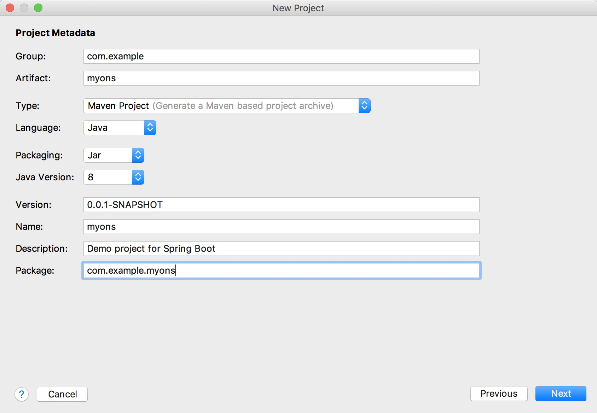
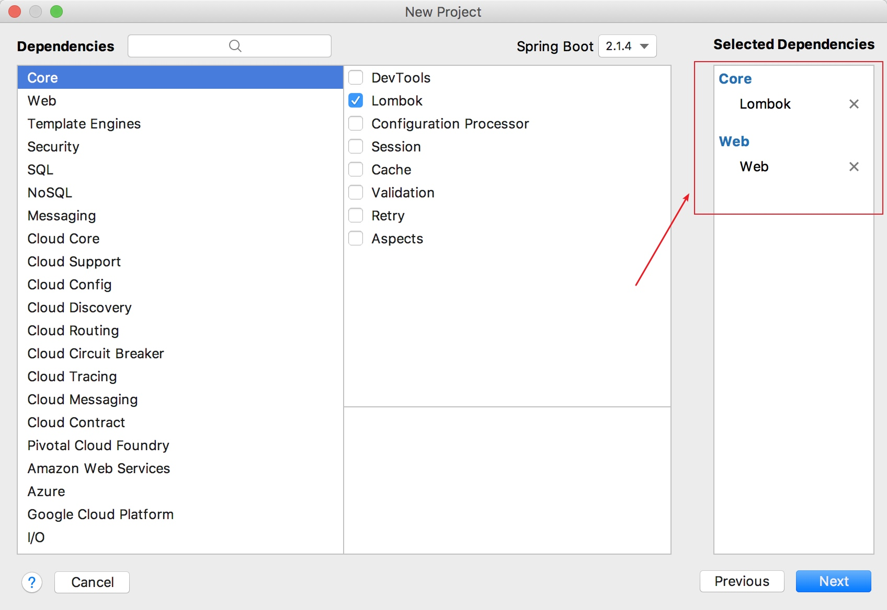

文档地址：
- https://help.aliyun.com/document_detail/29597.html
- https://help.aliyun.com/document_detail/44419.html
拿获取 查询消费堆积 这个关键监控接口举例
创建项目并引入监控包和客户端包
创建spring boot项目

引入lombok和web包

客户端包用来发送/消费测试消息
<!-- https://mvnrepository.com/artifact/com.aliyun.openservices/ons-client -->
<dependency>
<groupId>com.aliyun.openservices</groupId>
<artifactId>ons-client</artifactId>
<version>1.8.0.Final</version>
</dependency>
监控包用来查询当前的发送或者消费状态
<dependency>
<groupId>com.aliyun</groupId>
<artifactId>aliyun-java-sdk-core</artifactId>
<optional>true</optional>
<version>4.3.3</version>
</dependency>
<dependency>
<groupId>com.aliyun</groupId>
<artifactId>aliyun-java-sdk-ons</artifactId>
<version>3.1.0</version> <!-- 设置为最新版本号 -->
</dependency>
设置生产者和消费者客户端连接参数
先在 https://ons.console.aliyun.com/ 页面上创建测试topic和groupId
连接参数从：https://usercenter.console.aliyun.com/#/manage/ak 获取
protected Properties getProperties() {
Properties properties = new Properties();
// 您在控制台创建的 Group ID
properties.put(PropertyKeyConst.GROUP_ID, "xxx");
// 鉴权用 AccessKey，在阿里云服务器管理控制台创建
properties.put(PropertyKeyConst.AccessKey, "xxx");
// 鉴权用 SecretKey，在阿里云服务器管理控制台创建
properties.put(PropertyKeyConst.SecretKey, "xxx");
// 设置 TCP 接入域名，进入控制台的实例管理页面，在页面上方选择实例后，在实例信息中的“获取接入点信息”区域查看
properties.put(PropertyKeyConst.NAMESRV_ADDR, "http://MQ_INST_1031505832294665_BaUk7MNM.mq-internet-access.mq-internet.aliyuncs.com:80");
return properties;
}
编写测试生产者
@Test
public void send() throws Exception {
Properties properties = getProperties();
Producer producer = ONSFactory.createProducer(properties);
// 在发送消息前，必须调用 start 方法来启动 Producer，只需调用一次即可
producer.start();
for (int i = 0; i< 1000; i ++) {
//发送消息
Message msg = new Message( //
// 在控制台创建的 Topic，即该消息所属的 Topic 名称
"APP_DELAY_TOPIC",
// Message Tag,
// 可理解为 Gmail 中的标签，对消息进行再归类，方便 Consumer 指定过滤条件在消息队列 RocketMQ 服务器过滤
"TagA",
// Message Body
// 任何二进制形式的数据， 消息队列 RocketMQ 不做任何干预，
// 需要 Producer 与 Consumer 协商好一致的序列化和反序列化方式
"Hello MQ".getBytes());
// 设置代表消息的业务关键属性，请尽可能全局唯一，以方便您在无法正常收到消息情况下，可通过控制台查询消息并补发
// 注意：不设置也不会影响消息正常收发
msg.setKey("ORDERID_100");
// 发送消息，只要不抛异常就是成功
// 打印 Message ID，以便用于消息发送状态查询
SendResult sendResult = producer.send(msg);
log.info("Send Message success. Message ID is: " + sendResult.getMessageId());
log.info("messageId: " + sendResult.getMessageId());
Thread.sleep(500);
}
// 在应用退出前，可以销毁 Producer 对象
// 注意：如果不销毁也没有问题
producer.shutdown();
}
并启动查看效果
编写测试消费者
@Test
public void consumer() throws Exception {
Properties properties = getProperties();
Consumer consumer = ONSFactory.createConsumer(properties);
consumer.subscribe("APP_DELAY_TOPIC", "TagA", new MessageListener() {
@Override
public Action consume(Message message, ConsumeContext context) {
System.out.println("OnsServiceImpl Receive: " + message);
return Action.CommitMessage;
}
});
consumer.start();
System.out.println("Consumer Started");
Thread.sleep(600000);
}
并启动查看效果
编写监控数据查询代码
instanceId 从：https://ons.console.aliyun.com/ 页面获取
regionId 从：https://help.aliyun.com/document_detail/44419.html 页面获取
/**
* 查询消费堆积
*/
@Test
public void messageCount() throws Exception {
/**
* Open API 的接入点，设置为目标 Region
*/
String regionId = "mq-internet-access";
/**
* 实例id
*/
String instanceId = "xxx";
IClientProfile profile = DefaultProfile.getProfile(
regionId,
getProperties().getProperty(PropertyKeyConst.AccessKey),
getProperties().getProperty(PropertyKeyConst.SecretKey)
);
IAcsClient iAcsClient = new DefaultAcsClient(profile);
//构造 Request 对象：这里以 TopicList 接口为例子，不同的 API 接口构造不同的 Request 对象
OnsConsumerAccumulateRequest request = new OnsConsumerAccumulateRequest();
request.setPreventCache(System.currentTimeMillis()); //当前时间戳
request.setGroupId(getProperties().getProperty(PropertyKeyConst.GROUP_ID));
request.setInstanceId(instanceId);
OnsConsumerAccumulateResponse response = iAcsClient.getAcsResponse(request);
log.info(JSON.toJSONString(response));
}
启动查看效果
核查返回的json数据
{
"data":{
"consumeTps":0.37,
"delayTime":0,
"detailInTopicList":[
],
"lastTimestamp":1505558727362,
"online":true,
"totalDiff":19
},
"requestId":"FBE09C28-CCEF-447A-878A-C79136EBCC9F"
}
通过文档描述：https://help.aliyun.com/document_detail/29597.html 核对返回的json字段
找到关键字段供监控显示